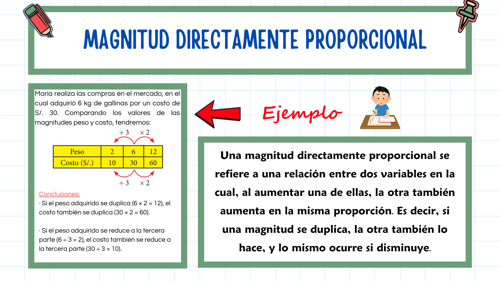
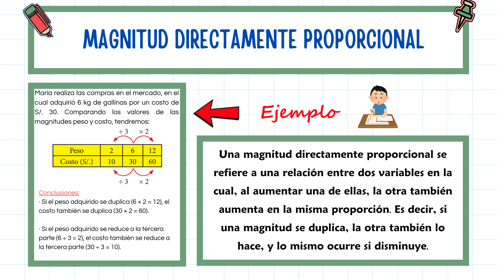

MAGNITUDES PROPORCIONALES
Magnitud Directamente Proporcional
Actividad de GeoGebra
Obra publicada con Licencia Creative Commons Reconocimiento Compartir igual 4.0

Obra publicada con Licencia Creative Commons Reconocimiento Compartir igual 4.0